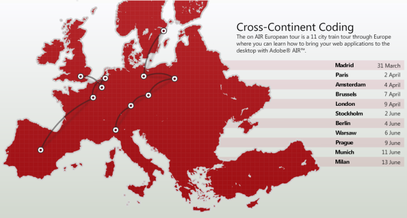

Adobe On AIR Tour Berlin 2008

Have just got back from Berlin where I combined a much needed break with a visit to the European leg of Adobe’s On AIR Tour. For those of you that don’t know, AIR (Adobe Integrated Runtime) is Adobe’s solution to deploying web-type applications on the desktop. It has some pretty big potential for us web developers to take advantage of, allowing desktop applications to be created in nothing less than HTML, CSS Javascript and / or Flash. The rendering engine is Webkit (the same as Safari 3) so allows for standards compliant code and the use of some of the newer w3c standards. The runtime is available across Mac Windows and Linux.
The tour day was very impressive with loads of talks from Adobe’s “Platform Evangelists” Mike Chambers, Kevin Hoyt, Serge Jespers and Daniel Dura amongst others. In common with most of the corporate sponsored conferences I’ve been to, the food was excellent and plentiful and all attendees were given a goody bag, in this case including a copy of the O’Reilly AIR for JavaScript Developers Pocket Guide written by Mike, Kevin and Daniel (for those that missed out you can still get a free copy of the guide in PDF format).
Presentations ranged from an AIR quickstart (Hello World) in both Flex and HTML, right through to how to automatically update and deploy your application, security, Javascript Frameworks and more.
One of the most interesting to me was Ethan Malasky’s on developing secure AIR applications. We were given a good breakdown of AIR’s security model alongside practical explanations of why the decisions had been made. Ethan had a special “unsecured” version of AIR running on stage and proceeded to demonstrate how a code injection could be used to delete files on a users hard disk. Thankfully this version is not in production!
AIR security had been a stumbling block for me from day one when I tried to implement a js framework that uses the eval() method. Adobe has disabled this and some other potentially harmful methods in AIR’s default application context. At first I was pretty annoyed about this but after listening to their reasoning and being presented with the official Adobe work around I’ve come to understand why it’s a good idea. After a bit more investigation I hope to make a later post on using methods such as eval() in an AIR application, but for those of you that can’t wait it relies on using different application sandboxes and using a sandbox bridge.
All in it was a great day out and really opened my eyes to some of the potential in AIR, I’m hoping to do a lot more with this stuff in the coming months so keep an eye out.
Leave a comment